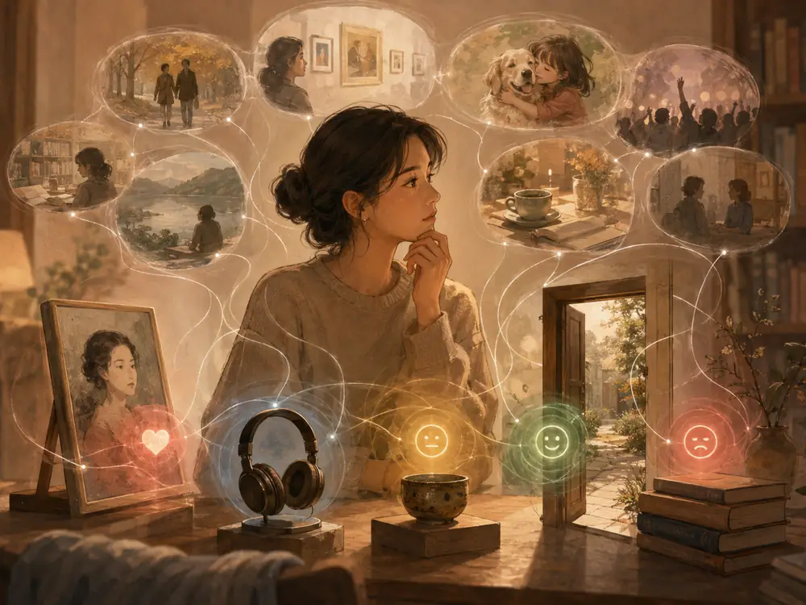

좋고 싫음은 어디에서 오는가

좋고 싫음은 감정일까, 지식일까.
보자마자 좋은 것이 가능할까.
보자마자 싫은 것도 가능할까.
가끔은 정말 그런 것처럼 느껴진다.
처음 본 사람인데 왠지 편하고,
처음 들은 음악인데 좋고,
처음 들어간 공간인데 마음이 놓인다.
반대로 이유를 설명하기 어려운데도 괜히 불편한 사람이 있고,
딱히 나쁜 점을 찾지 못했는데도 마음이 가지 않는 것이 있다.
그럴 때 우리는 말한다.
그냥 좋아.
그냥 싫어.
마치 감정이 설명보다 먼저 도착한 것처럼.
그런데 정말 그럴까.
아무것도 모르는 상태에서 우리는 좋아하고 싫어할 수 있을까.
어쩌면 내가 보자마자 좋다고 느낀 것도 사실은 처음이 아닐지 모른다.
예전에 좋아했던 사람과 비슷한 표정.
익숙한 색.
좋은 기억이 남아 있는 냄새.
편안했던 장소와 닮은 분위기.
나는 그것을 처음 본다고 생각하지만, 내 안에서는 이미 알고 있던 수많은 것들과 아주 빠르게 비교하고 있는지도 모른다.
싫음도 비슷하다.
말투 하나가 거슬리는 이유를 당장은 설명하지 못해도, 예전에 불편했던 누군가와 닮아 있을 수 있다.
어떤 행동을 보고 순간적으로 싫다고 느꼈지만, 사실은 내가 중요하게 생각하는 기준을 그 행동이 건드린 것일 수도 있다.
그렇다면 좋아하고 싫어하는 마음은 단순한 감정이라고만 하기 어렵다.
감정은 아주 빠르게 나타나지만,
그 뒤에는 내가 살아오며 쌓아온 기억과 경험과 기준이 숨어 있을지도 모른다.
재미있는 것은 이해하면 감정도 달라진다는 점이다.
처음에는 별로였던 음악이 자꾸 듣다 보니 좋아질 때가 있다.
처음에는 이상하다고 생각했던 그림이 배경을 알고 나니 멋있어 보이기도 한다.
별로 마음에 들지 않았던 사람도 이야기를 오래 나누고 나면 전혀 다르게 보일 수 있다.
반대도 있다.
처음에는 좋았는데 알고 나니 싫어지는 것.
겉으로는 멋있어 보였는데 이유를 알고 나니 실망스러운 것.
좋고 싫음은 한 번 정해지면 끝나는 판정이 아닌 모양이다.
우리는 이해하면서 다시 좋아하고,
이해하면서 다시 싫어한다.
그래서 생각한다.
좋고 싫음은 감정일까, 지식일까.
아마 둘 중 하나만은 아닐 것이다.
감정은 먼저 반응하고,
지식은 그 감정을 천천히 고친다.
혹은 내가 그렇게 생각하고 있을 뿐, 사실은 지식과 기억이 너무 빠르게 움직여 감정처럼 느껴지는 것인지도 모른다.
결국 내가 "그냥 좋아"라고 말할 때에도,
그 '그냥' 안에는 생각보다 많은 것이 들어 있을 수 있다.
살아온 시간.
좋았던 기억.
싫었던 경험.
내가 중요하게 여기는 것.
그리고 아직 나조차 설명하지 못하는 기준들.
그래서 요즘은 누군가가 무언가를 좋다고 하거나 싫다고 할 때,
조금 궁금해진다.
왜 좋을까.
왜 싫을까.
그리고 그 이유를 알게 되면,
그 마음은 그대로일까.
좋고 싫음은 어디에서 오는가.
아직 잘 모르겠다.
다만 분명한 것은,
마음은 생각보다 훨씬 오래 살아온 뒤에 반응한다는 것이다.